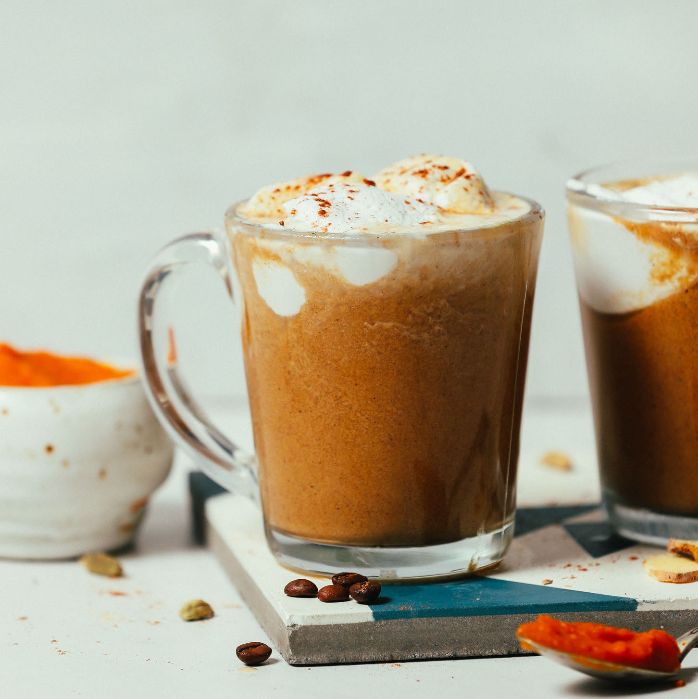

Pumpkin Spice Latte

Warm fall spices blend into this perfect drink
Ingredients
- 2 Tablespoons 100% pumpkin puree
- Slightly rounded 1/4 teaspoon pumpkin pie spice
- 1 Tablespoon sugar
- 1 cup milk
- 1 1/2 teaspoons vanilla
- 1 shot espresso OR 1/4 cup strongly brewed coffee
- Whipped cream for topping, optional
- Nutmeg for topping, optional
Steps
- Add pumpkin puree and pumpkin pie spice to a small saucepan over medium-high heat.
- Stir until very fragrant and bubbly, 30 seconds to 1 minute.
- Add sugar and stir until smooth and bubbly.
- Whisk in milk
- Add vanilla and stir until drink is hot
- Brew espresso or coffee into a mug.
- Strain milk mixture into the mug.
- Add whipped cream and/or nutmeg and serve.